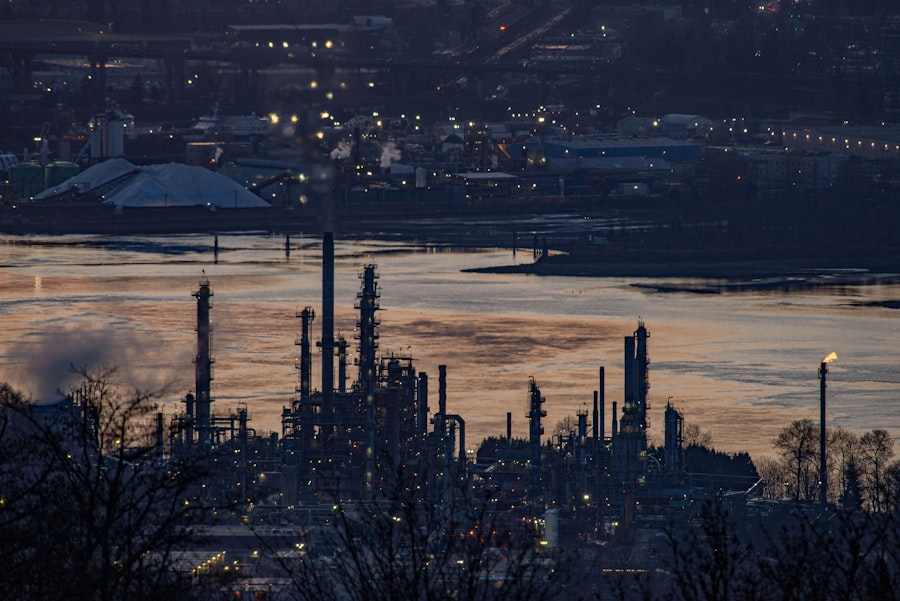
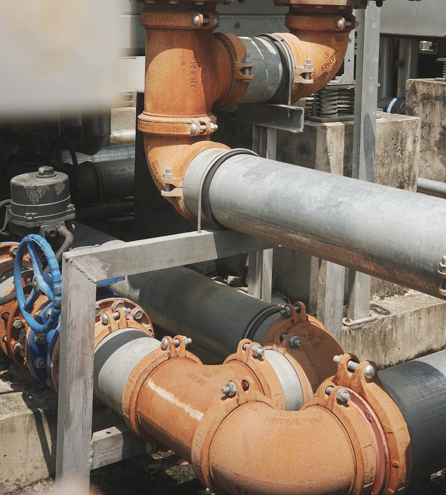

[대표 프로젝트 1]
[프로젝트 개요: 규모, 역할, 주요 기여 — 예: lead process engineer로 PFD/P&ID 개발 및 HAZOP facilitation]
Motivation
[회사명]의 [직무명]에 지원하게 된 것은, 지난 20년간 플랜트 설계 현장에서 쌓아 온 공정 엔지니어링 경험을 [회사명]의 [산업 분야] 프로젝트에 기여하고 싶기 때문입니다. 화학공학 전공 이후 엔지니어링 회사에서 process engineer로 근무하며, 공정 개념 설계부터 상세 설계, 시운전 지원까지 프로젝트 전 주기를 경험했습니다.
[회사명]이 [기업의 강점 또는 가치 — 예: 안전·품질 중심의 EPC 역량 / 글로벌 프로젝트 수행력]을 바탕으로 성장하고 있다는 점에 깊은 인상을 받았습니다. 저는 단순히 설계 산출물을 완성하는 것을 넘어, 발주처·타 discipline·시공사와의 협업 속에서 최적의 공정 솔루션을 도출하는 일에 보람을 느껴 왔습니다. [회사명]에서 동일한 전문성과 책임감으로 프로젝트 성공에 기여하고자 지원합니다.
Expertise
Representative Projects

[프로젝트 개요: 규모, 역할, 주요 기여 — 예: lead process engineer로 PFD/P&ID 개발 및 HAZOP facilitation]

[프로젝트 개요: 규모, 역할, 주요 기여 — 예: revamp project에서 heat integration 검토 및 capacity debottlenecking]
[대학교명] 화학공학과를 졸업한 후, [현재/이전 회사명]에서 process engineer로 20년간 근무해 왔습니다. FEED 단계의 공정 개념 수립부터 detail design, revision 관리, vendor data review, 시운전 단계 기술 지원까지 폭넓게 수행했습니다.
My Approach
공정 데이터와 설계 가정을 명확히 문서화하고, balance closure·sizing basis·design margin을 일관되게 관리합니다. 설계 변경 시에도 근거를 추적 가능하게 유지합니다.
Piping, instrument, mechanical discipline과의 early engagement를 통해 constructability와 operability를 동시에 고려하는 설계를 지향합니다.
Milestone 기반 deliverable 관리와 critical path 이슈의 선제적 escalate. [멘토링 경험]을 통해 팀 설계 품질 향상에도 기여했습니다.
Vision
[회사명]에 합류하게 된다면, [직무명]으로서 공정 discipline의 기술적 backbone 역할을 수행하겠습니다. [회사명]의 [산업 분야 / 프로젝트 유형] 프로젝트에서 안전하고 경제적인 공정 설계를 통해 발주처 신뢰를 확보하고, 프로젝트 일정·비용·품질 목표 달성에 기여하겠습니다.
장기적으로는 축적된 plant design know-how를 바탕으로, [기술 리더십 목표 — 예: design standard 정립 / revamp·debottlenecking 전문성 강화 / 후배 engineer 육성]에도 적극적으로 참여하겠습니다. [회사명]과 함께 성장하며, 지속 가능하고 경쟁력 있는 엔지니어링 솔루션을 제공하는 데 기여하고자 합니다.